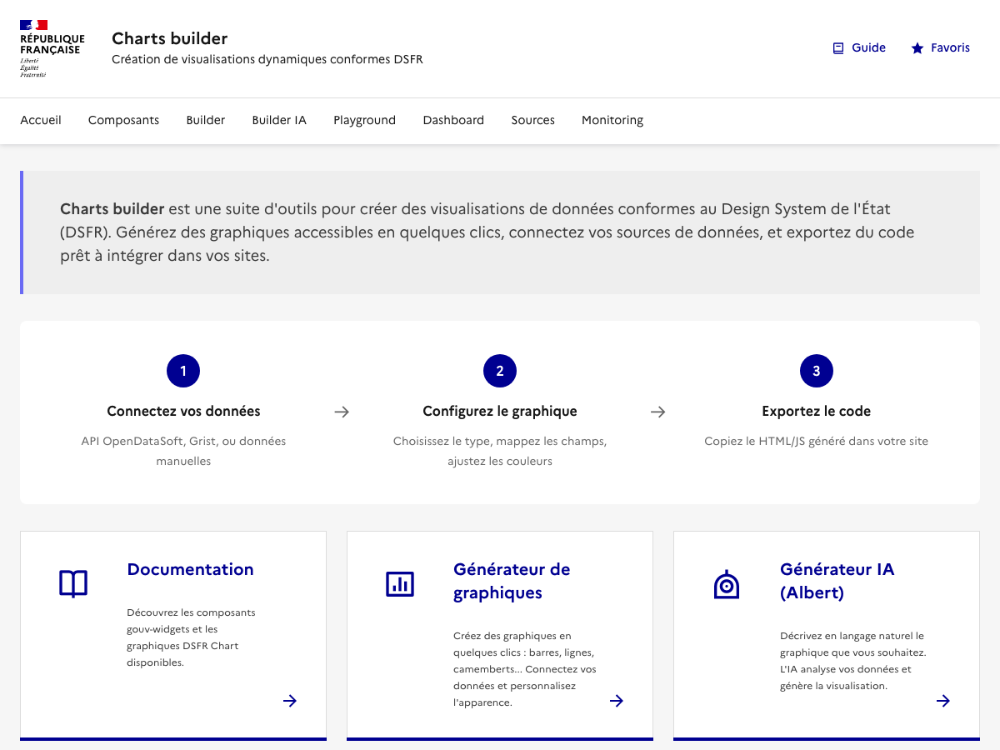

Guide utilisateur — gouv-widgets
Ce guide presente les principaux parcours d'utilisation de gouv-widgets, une bibliotheque de Web Components de dataviz pour les sites gouvernementaux francais, conforme au DSFR.
Chaque parcours est presente comme une user story :
L'interface
L'application est accessible depuis la page d'accueil qui regroupe tous les outils :
Les outils disponibles sont :
- Sources : connecter et gerer les sources de donnees (Grist, API, manuelles)
- Builder : generateur visuel de graphiques pas-a-pas
- Builder IA : generateur de graphiques par conversation avec l'IA Albert
- Playground : editeur de code interactif avec apercu temps reel
- Dashboard : editeur visuel de tableaux de bord multi-widgets
- Monitoring : suivi des deployements de widgets en production
Parcours utilisateur
7 parcours pas-a-pas : donnees locales, Grist, Builder IA, Playground, Dashboard, API REST, Monitoring.
Exemples par composant
Exemples live avec code source : gouv-source, normalize, query, search, facets, display.
Widgets Grist
Les composants gouv-widgets sont disponibles sous forme de custom widgets pour Grist, le tableur collaboratif open-source. Ces widgets permettent de visualiser les donnees de vos tables Grist avec des graphiques, cartes et tableaux conformes au DSFR.
Les widgets sont deployes sur GitHub Pages et accessibles a cette adresse : bmatge.github.io/datasource-charts-webcomponents
Widgets disponibles
| Widget | URL | Description |
|---|---|---|
| Graphique / Carte / KPI | https://bmatge.github.io/datasource-charts-webcomponents/chart/ |
Widget polyvalent : 7 types de graphiques, 2 cartes France, KPI |
| Tableau DSFR | https://bmatge.github.io/datasource-charts-webcomponents/datalist/ |
Tableau avec recherche, tri, pagination et export CSV |
Ajouter un widget dans Grist
- Ouvrez votre document Grist et placez-vous sur la page souhaitee
- Cliquez sur Ajouter un widget en haut de la page
- Selectionnez Custom URL comme type de widget
- Collez l'URL du widget (voir tableau ci-dessus) dans le champ URL
- Dans Acces, selectionnez Lire la table pour autoriser le widget a acceder aux donnees
- Cliquez sur Ajouter a la page
Widget Graphique / Carte / KPI
Ce widget unique supporte 10 types de visualisations configurables depuis le panneau d'options :
Types de visualisation
| Categorie | Type | Description |
|---|---|---|
| Graphiques | bar | Barres verticales (ou horizontales) |
line | Courbes / lignes | |
pie | Camembert / donut | |
radar | Diagramme radar | |
scatter | Nuage de points | |
gauge | Jauge de progression | |
bar-line | Barres + lignes combines | |
| Cartes | map | Carte de France par departements |
map-reg | Carte de France par regions | |
| KPI | kpi | Indicateur cle de performance (valeur agregee) |
Mapping des colonnes
Apres avoir ajoute le widget, mappez les colonnes de votre table Grist dans la section Colonnes du panneau de configuration :
| Colonne | Type | Utilisation | Obligatoire |
|---|---|---|---|
| Label | Texte | Etiquettes (graphiques) ou noms (cartes) | Optionnel |
| Value | Numerique | Valeur principale a afficher | Requis |
| Value2 | Numerique | Serie secondaire (graphiques multi-series) | Optionnel |
| Code | Texte | Code geographique INSEE (cartes uniquement) | Pour cartes uniquement |
Options de configuration
Cliquez sur l'icone engrenage dans le widget pour acceder aux options :
- Type de visualisation : choisir parmi les 10 types disponibles
- Palette de couleurs : Bleu France, categorielle, sequentielle (asc./desc.), divergente (asc./desc.), neutre
- Unite (tooltip) : texte affiche dans l'infobulle (ex: EUR, %, habitants)
- Barres horizontales : orientation horizontale (types bar/line uniquement)
- Barres empilees : empilement des series (types bar/line uniquement)
Options specifiques au KPI :
- Agregation : moyenne, somme, comptage, minimum, maximum
- Format : nombre, pourcentage, euro, decimal
- Libelle : texte affiche sous la valeur
- Icone : classe Remix Icon (ex:
ri-line-chart-line) - Couleur : bleu, vert, orange, rouge, ou automatique (seuils)
Widget Tableau DSFR
Le widget Tableau affiche automatiquement toutes les colonnes de la table Grist sans configuration de mapping. Les options disponibles sont :
- Lignes par page : 10, 20, 50 ou tout afficher
- Barre de recherche : filtrage en temps reel sur toutes les colonnes
- Export CSV : bouton de telechargement des donnees
Enregistrement via manifeste
Pour que les widgets apparaissent directement dans la liste des widgets disponibles dans Grist (sans avoir a saisir l'URL manuellement), enregistrez l'URL du manifeste dans l'administration de votre instance Grist :
https://bmatge.github.io/datasource-charts-webcomponents/manifest.json
Dans Grist, accedez a Manage Widgets dans les parametres d'administration et ajoutez cette URL. Les widgets seront ensuite proposes automatiquement lors de l'ajout d'un widget Custom.
Ressources
Playground
Editeur de code interactif avec exemples precharges et apercu en temps reel.
Demo composants
Voir tous les composants avec leurs attributs et exemples interactifs.
DSFR Chart
Documentation officielle des composants graphiques DSFR.